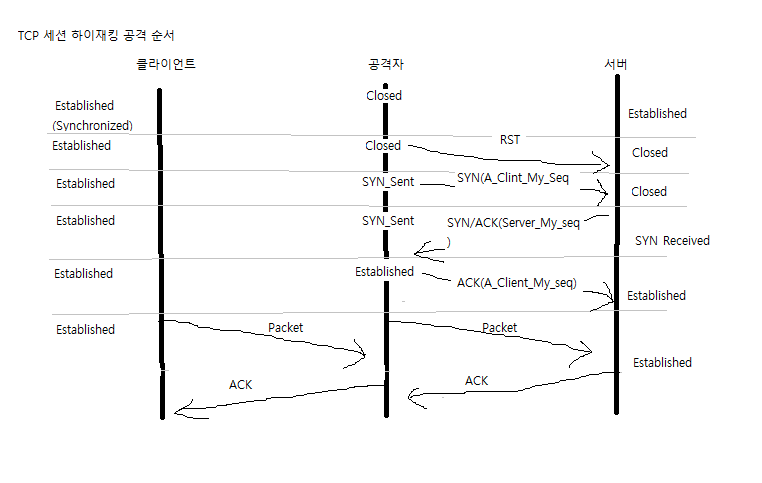
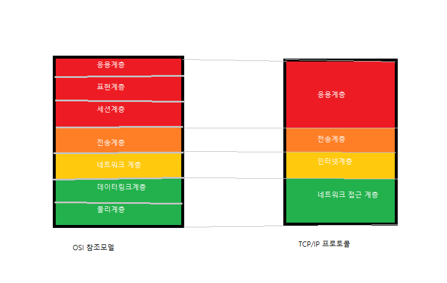

(PPT보고 약간 정리 필요)
13장 세션 하이재킹
하이재킹 = 공중발차기
세션 = 클라이언트+서버 연결 활성화 된 상태
로그인 되어있는 상태
TCP세션 하이재킹
시퀀스 넘버 이용한 공격 (이유: 신뢰성 확보)
클라이언트 서버 관찰, 트러스트 이용 세션
텔넷 등 TCP도 이용
Client_my_seq > 클라이언트가 관리하는 자신의 시퀀스넘버
Client_Server_seq > 클라이언트가 알고 있는 서버의 시퀀스넘버
Server_My_Seq > 서버가 관리하는 자신의 시퀀스넘버
등..
시퀀스넘버: 32bit 같은 큰 건데 TVP 신크루나이즈(전화걸기)를 받고
Ack 신호 보내고 관리하는 과정에 오는 +1을 말함.
TCP 하이재킹 이미지(외우기)

TCP하이재킹 순서
연결은 끊어졌는데 인증세션 열린 상태
예: 로그인 후 로그아웃 없이 X버튼 눌러서 나가기
안 끊어질 경우 자동 로그인
세션하이재킹 공격의 탐지
비동기화 상태 탐지:
서버와 시퀀스넘버를 주기적으로 체크해
비동기화 상태 빠지면 탐지해냄
Ack Storm 탐지:
공격이 실시되면 Ack패킷 비율이 급격히 늘어남
공격세션 하이재킹 공격 대응책
(암호화 + 지속인증 방식임)
패스워드하고 다시 물어봄.
로그인 한 상태에서도 비번 다시 묻기
진짜 너 맞지? 그게 Continuous Authen-lication
특정 행동이나 일정 시간 되면 다시 입력 > 유효한 사용자인지 확인
17장 방화벽
네트워크에서의 방화벽은 보안 높이는데 일차원적인 부분
나가기 들어가기 다 필터링
방화벽 주된 기능
접근제어:
방법에 따라 패킷필터링(23번 막아라)
프록시 방식으로 나뉨(중간에 껴서 접속함)
방화벽 기능(자격증): 접근제어, 로깅&감사추적(허가또는거부된접근에대한기록유지),
(방화벽은 메세지, 사용자, 클라이언트 인증 가능)인증,
(다른 방화벽까지 전송되는 데이터를 암호화해서 보냄 보통 VPN)데이터의 암호화
베스천 호스트(Bastion Host)
방화벽 기능도 하지만 하나가 아니며 동일하지 않음
일차원적인 연결 받는 접근 허용하거나 차단
스크리닝 라우터(Screening)
방화벽이라기엔 부족함
포트 막고 아이피 주소 막고 패킷필터링 정도라 함
걍 간단하게 거르는 정도
스크리닝: 가림막, 막아주다
단일 홈 게이트웨이(Single Homed Gateway)
길이 하나임
하나 뚫리면 무방비함
심지어 방화벽 우회함. 담 넘는 개구멍 파든 옆 산 타든
이중 홈 게이트웨이(Dual Homed Gateway)
네트워크 카드, 길이 두 개임
스크린된 호스트웨이(Screened Host Gateway)
스크린된 호스트웨이 - 이중 홈
네트워크가 한 번 더 막음
정상 벗어나는 패턴의 이상한 놈 기준점 넘어가는 놈 잡아냄
다른 곳에서 나쁜 짓 했던 놈 잡아냄
외부네트워크 외부네트워크 사이 완충지대를 두는 것.
추가지식:
AI가 좋으니 요즘은 정보가 많음 비교도 많고 확인도 많아서
ADS = 관리자에게 이름 이상하다고(옛날엔 내가 보고 날림)
APS = 직접 식별해서 직접 대응해서 차단함
을 합치면 됨
스크린된 서브넷 게이트웨이 - 단일 홈
다른 것 하나랑
DMZ - 주로 프록시가 설치 됨 직접 연결이 아니니(비무장지대)
해커 칩임하면 통과할 게 많음
패킷 필터링
허용할 서비스 확인
제공하는 서비스 보안 문제 없나 타당성 확인
서비스가 이루어지고 있는 형태를 확인하고 어떤 규칙 적용할지 결정 IP주소 설정해줌.
방화벽에 실제 적용하고 규칙 검사
IP 부족해서 쓰는 것 =
NAT, 서브넷마스크(최적으로 쪼개기)
사설로 내부에서만 공동으로 쓰기 가능
물론 나올 땐 공인 IP 쓰는 것임.
다음 시간에 NAT에 대해 설명.
OSI계층 이미지 참조하기
